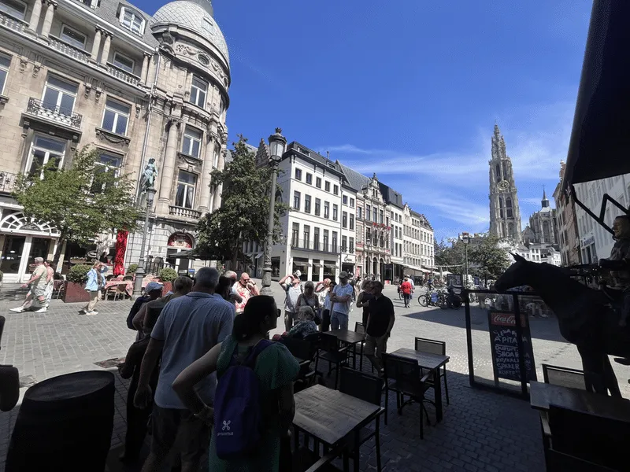
Fake News Tour Anvers
Faits, inventions et histoires urbaines étonnantes. À vous de découvrir ce qui est vrai.
Voir les détails ↗Visites guidées
Rejoignez une visite existante auprès de l’organisateur ou contactez Marie-Hélène pour une formule adaptée à votre groupe et à l’occasion.
Des promenades qui révèlent rues, quartiers et récits familiers sous un angle inattendu.

Faits, inventions et histoires urbaines étonnantes. À vous de découvrir ce qui est vrai.
Voir les détails ↗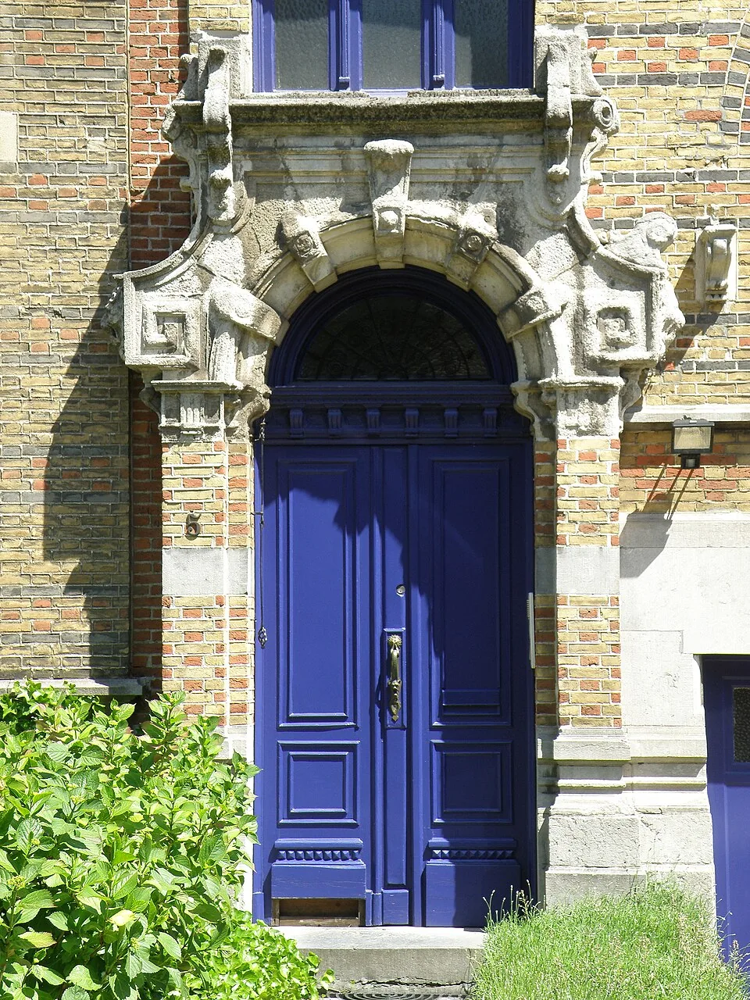
Une promenade entre façades exubérantes et récits parfois un peu trop beaux pour être vrais.
Voir les détails ↗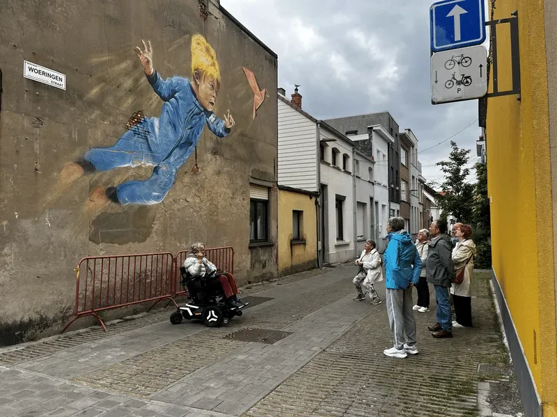
Découvrez les quartiers ouvriers, les figures locales et les récits étonnants de Berchem. Mais qu’est-ce qui est vrai — et qu’est-ce qui est inventé ?
Voir les détails ↗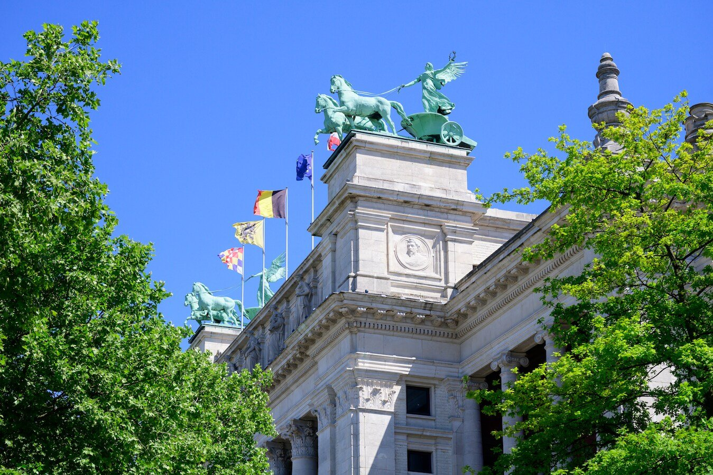
Du KMSKA au quai Waalse Kaai, découvrez un quartier vivant où l’architecture monumentale rencontre l’Escaut.
Voir les détails ↗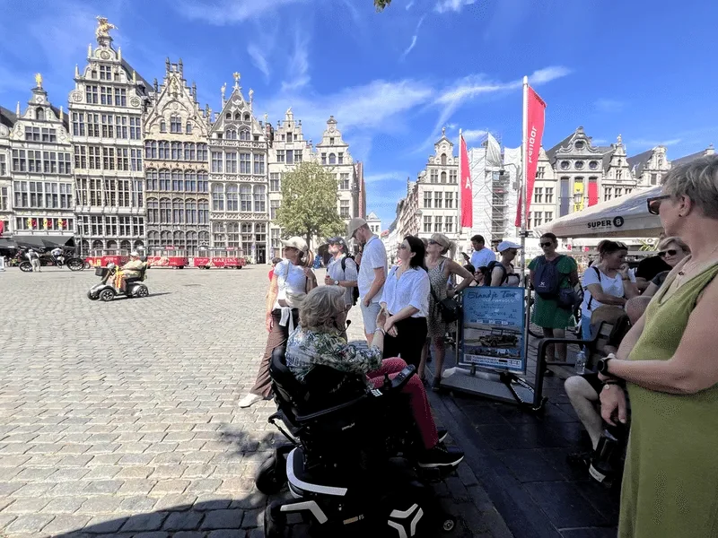
Une découverte détendue de la Grand-Place, du Steen, de la cathédrale et des récits qui ont façonné la ville.
Voir les détails ↗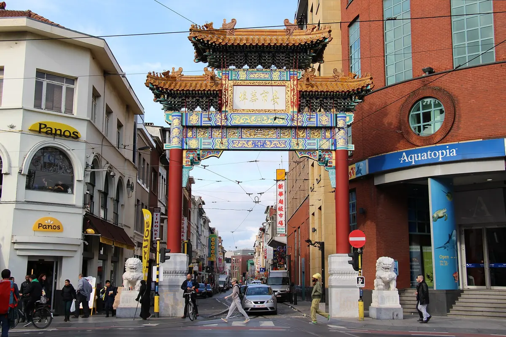
Dans le quartier de la Gare, découvrez les cultures, convictions et traditions qui contribuent à façonner Anvers.
Voir les détails ↗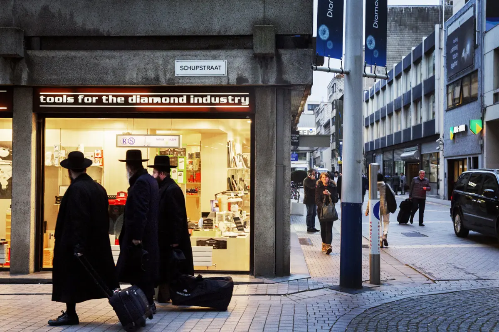
Explorez le Diamond Square Mile et découvrez l’histoire, le commerce et le savoir-faire du monde diamantaire anversois.
Voir les détails ↗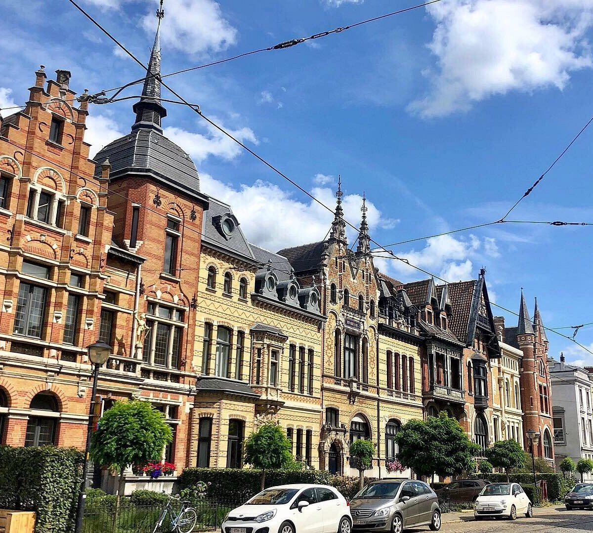
Flânez devant de majestueuses demeures et découvrez l’architecture éclectique Belle Époque de Zurenborg.
Voir les détails ↗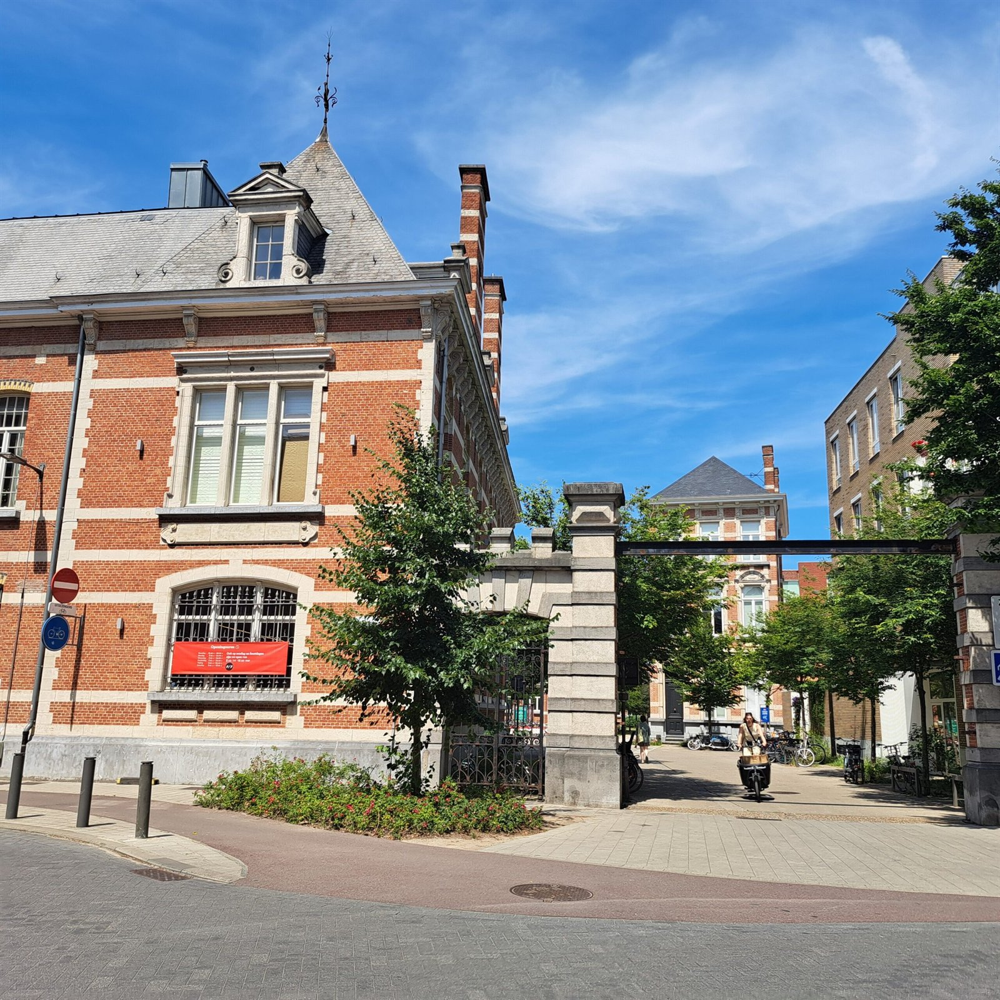
Découvrez comment un ancien domaine militaire fermé est devenu un quartier vert et sans voitures, où patrimoine historique et vie urbaine contemporaine se rencontrent.
Bientôt disponibleDes visites qui relient œuvres, bâtiments et significations de manière claire et accessible.
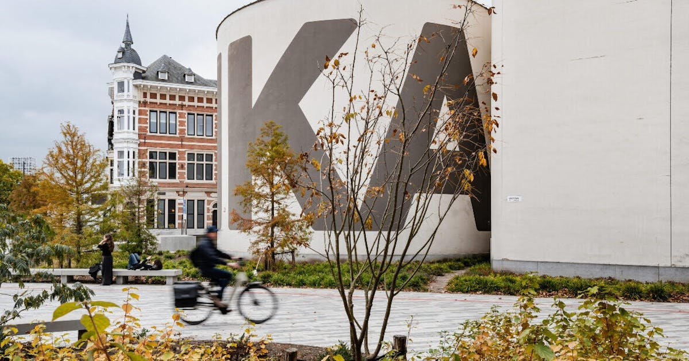
Découvrez l’art contemporain dans et autour du M HKA, avec du contexte, du temps pour les questions et une attention à votre propre regard.
Voir les détails ↗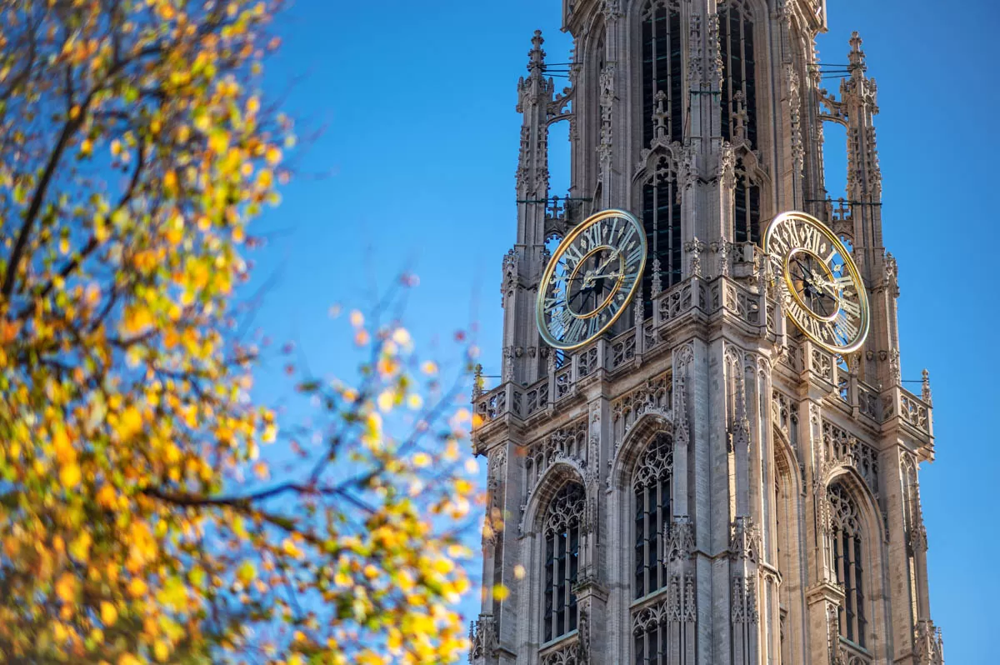
Art, histoire et symbolique dans l’un des monuments les plus reconnaissables de la ville.
Voir les détails ↗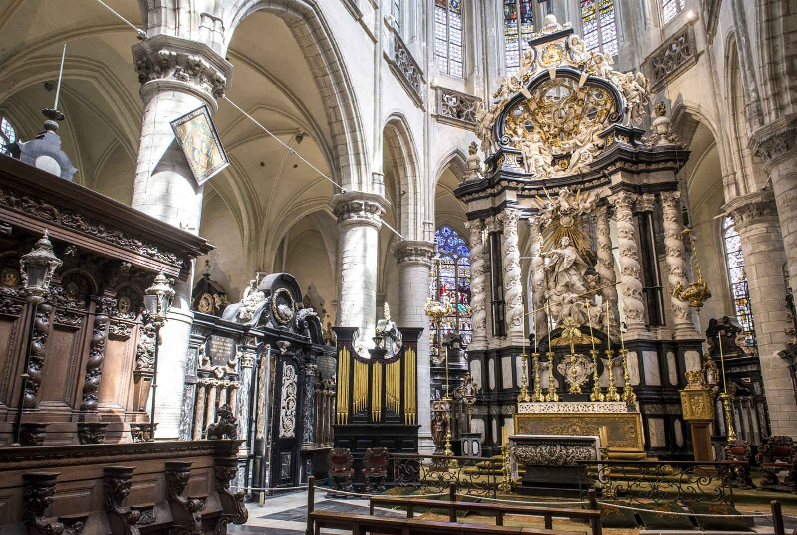
Une église monumentale abritant des trésors baroques et la chapelle funéraire de Pierre Paul Rubens.
Voir les détails ↗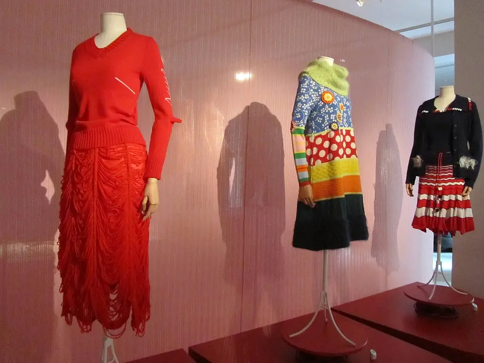
De l’Académie de mode aux créateurs internationaux : découvrez pourquoi Anvers est une capitale de la mode.
Voir les détails ↗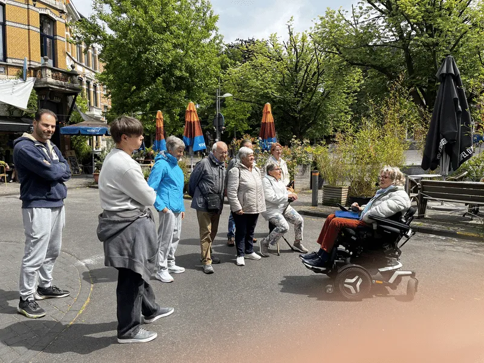
Visite sur mesure
Indiquez qui vous accompagne, ce qui vous intéresse et l’occasion que vous préparez. Marie-Hélène vous aidera à choisir un parcours et une formule adaptés.
Voir les possibilités ↗